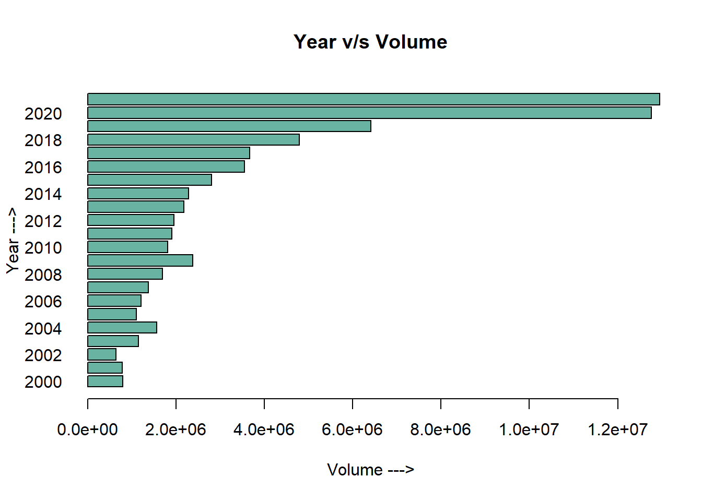

Code
library(tidyverse)
library(ggplot2)
library(ggforce)
library(forcats)
library(lubridate)
library(hrbrthemes)
library(plotly)
knitr::opts_chunk$set(echo = TRUE, warning = FALSE, message = FALSE)library(tidyverse)
library(ggplot2)
library(ggforce)
library(forcats)
library(lubridate)
library(hrbrthemes)
library(plotly)
knitr::opts_chunk$set(echo = TRUE, warning = FALSE, message = FALSE)The NIFTY 50 is a benchmark Indian stock market index that represents the weighted average of 50 of the largest Indian companies listed on the National Stock Exchange. It is one of the two main stock indices used in India, the other being the BSE SENSEX. With the dataset I got from kaggle, I will perform an EDA of the stock prices listed from 2000 to 2021. Some answers I wanted to find out were :
Do all stocks remain the same each year?
What is the best and worst stock in a year?
What is the stock performance of companies that I regularly use?
Description of columns in the file:
Date — Date of trade
symbol — Name of the company
Series — We have only one series - EQ, which stands for Equity.
Prev Close — Refers to the final price of a stock of the previous dat when the market officially closes, which is at 3:30pm IST
Open — The open is the starting period of trading on a securities exchange or organized over-the-counter market.
High — Highest price at which a stock traded during the course of the trading day.
Low — Lowest price at which a stock traded during the course of the trading day.
Last — The last price of a stock is just one price to consider when buying or selling shares. The last price is simply the most recent one
Close — The close is a reference to the end of a trading session in the financial markets when the markets close for the day.
VWAP (Volume-weighted average price)- It is the ratio of the value traded to total volume traded over a particular time horizon. It is a measure of the average price at which a stock is traded over the trading horizon
Volume — It is the amount of a security that was traded during a given period of time
Turnover -It is a measure of sellers versus buyers of a particular stock. It is calculated by dividing the daily volume of a stock by the “float” of a stock, which is the number of shares available for sale by the general trading public.
Trades- The number of shares being traded on a given day is called trading volumes
Deliverable Volume — quantity of shares which actually move from sellers to buyers
%Deliverable — shares which are actually transferred from one person’s to another’s demat account.
There are multiple .csv files, one for each stock, which are placed in a folder. I am reading data from all the csv files and combining them into a single data-frame using purrr package.
all_stocks <- dir("_data/NIFTY_AdithyaParupudi/", full.names = TRUE) %>% map_dfr(read_csv, )
all_stocks <- tibble(all_stocks)str(all_stocks)tibble [235,192 × 15] (S3: tbl_df/tbl/data.frame)
$ Date : Date[1:235192], format: "2007-11-27" "2007-11-28" ...
$ Symbol : chr [1:235192] "MUNDRAPORT" "MUNDRAPORT" "MUNDRAPORT" "MUNDRAPORT" ...
$ Series : chr [1:235192] "EQ" "EQ" "EQ" "EQ" ...
$ Prev Close : num [1:235192] 440 963 894 884 922 ...
$ Open : num [1:235192] 770 984 909 890 940 ...
$ High : num [1:235192] 1050 990 915 958 995 ...
$ Low : num [1:235192] 770 874 841 890 922 ...
$ Last : num [1:235192] 959 885 887 929 980 ...
$ Close : num [1:235192] 963 894 884 922 969 ...
$ VWAP : num [1:235192] 985 941 888 929 966 ...
$ Volume : num [1:235192] 27294366 4581338 5124121 4609762 2977470 ...
$ Turnover : num [1:235192] 2.69e+15 4.31e+14 4.55e+14 4.28e+14 2.88e+14 ...
$ Trades : num [1:235192] NA NA NA NA NA NA NA NA NA NA ...
$ Deliverable Volume: num [1:235192] 9859619 1453278 1069678 1260913 816123 ...
$ %Deliverble : num [1:235192] 0.361 0.317 0.209 0.274 0.274 ...
- attr(*, "spec")=
.. cols(
.. Date = col_date(format = ""),
.. Symbol = col_character(),
.. Series = col_character(),
.. `Prev Close` = col_double(),
.. Open = col_double(),
.. High = col_double(),
.. Low = col_double(),
.. Last = col_double(),
.. Close = col_double(),
.. VWAP = col_double(),
.. Volume = col_double(),
.. Turnover = col_double(),
.. Trades = col_double(),
.. `Deliverable Volume` = col_double(),
.. `%Deliverble` = col_double()
.. )
- attr(*, "problems")=<externalptr> The last column has a spelling mistake. Changing that to PercentDeliverable to avoid confusion and also renamed another column to camel-casing
all_stocksv2 <- all_stocks %>% rename(PercentDeliverable = `%Deliverble`, DeliverableVolume = `Deliverable Volume`)
colnames(all_stocksv2) [1] "Date" "Symbol" "Series"
[4] "Prev Close" "Open" "High"
[7] "Low" "Last" "Close"
[10] "VWAP" "Volume" "Turnover"
[13] "Trades" "DeliverableVolume" "PercentDeliverable"The date format is yyyy/mm/dd. I only want the year aspect, so creating a new column with just that. A new column ‘yy’ has been created, which is the last column
x<-format(as.Date(all_stocksv2$Date, format="%Y/%m/%d"))
all_stocks_yy <- all_stocksv2 %>%
mutate(yy=year(x)) %>%
select(-Date)
print(all_stocks_yy)# A tibble: 235,192 × 15
Symbol Series Prev C…¹ Open High Low Last Close VWAP Volume Turno…²
<chr> <chr> <dbl> <dbl> <dbl> <dbl> <dbl> <dbl> <dbl> <dbl> <dbl>
1 MUNDRAPORT EQ 440 770 1050 770 959 963. 985. 2.73e7 2.69e15
2 MUNDRAPORT EQ 963. 984 990 874 885 894. 941. 4.58e6 4.31e14
3 MUNDRAPORT EQ 894. 909 915. 841 887 884. 888. 5.12e6 4.55e14
4 MUNDRAPORT EQ 884. 890 958 890 929 922. 929. 4.61e6 4.28e14
5 MUNDRAPORT EQ 922. 940. 995 922 980 969. 966. 2.98e6 2.88e14
6 MUNDRAPORT EQ 969. 985 1056 976 1049 1041. 1015. 4.85e6 4.92e14
7 MUNDRAPORT EQ 1041. 1061 1100. 1050 1084 1082. 1083. 2.85e6 3.08e14
8 MUNDRAPORT EQ 1082. 1089 1110. 1051 1090. 1081. 1087. 1.75e6 1.90e14
9 MUNDRAPORT EQ 1081. 1100 1134 1078 1100 1102. 1107. 2.25e6 2.49e14
10 MUNDRAPORT EQ 1102. 1110 1110 1061. 1074. 1075. 1080. 1.01e6 1.09e14
# … with 235,182 more rows, 4 more variables: Trades <dbl>,
# DeliverableVolume <dbl>, PercentDeliverable <dbl>, yy <dbl>, and
# abbreviated variable names ¹`Prev Close`, ²Turnover
# ℹ Use `print(n = ...)` to see more rows, and `colnames()` to see all variable namesBy running the summary command we see that Trades, Deliverable Volume and Percent_Deliverables have a lot of missing values. Since they are all numeric, I’m replacing them with 0 to avoid calculation errors.
print(summarytools::dfSummary(all_stocks_yy,
varnumbers = FALSE,
plain.ascii = FALSE,
style = "grid",
graph.magnif = 0.70,
valid.col = FALSE),
method = 'render',
table.classes = 'table-condensed')| Variable | Stats / Values | Freqs (% of Valid) | Graph | Missing | |||||||||||||||||||||||||||||||||||||||||||||||||||||||
|---|---|---|---|---|---|---|---|---|---|---|---|---|---|---|---|---|---|---|---|---|---|---|---|---|---|---|---|---|---|---|---|---|---|---|---|---|---|---|---|---|---|---|---|---|---|---|---|---|---|---|---|---|---|---|---|---|---|---|---|
| Symbol [character] |
|
|
 |
0 (0.0%) | |||||||||||||||||||||||||||||||||||||||||||||||||||||||
| Series [character] | 1. EQ |
|
 |
0 (0.0%) | |||||||||||||||||||||||||||||||||||||||||||||||||||||||
| Prev Close [numeric] |
|
63729 distinct values |  |
0 (0.0%) | |||||||||||||||||||||||||||||||||||||||||||||||||||||||
| Open [numeric] |
|
44298 distinct values |  |
0 (0.0%) | |||||||||||||||||||||||||||||||||||||||||||||||||||||||
| High [numeric] |
|
49036 distinct values | |
0 (0.0%) | |||||||||||||||||||||||||||||||||||||||||||||||||||||||
| Low [numeric] |
|
51335 distinct values |  |
0 (0.0%) | |||||||||||||||||||||||||||||||||||||||||||||||||||||||
| Last [numeric] |
|
48570 distinct values |  |
0 (0.0%) | |||||||||||||||||||||||||||||||||||||||||||||||||||||||
| Close [numeric] |
|
63739 distinct values |  |
0 (0.0%) | |||||||||||||||||||||||||||||||||||||||||||||||||||||||
| VWAP [numeric] |
|
138831 distinct values | |
0 (0.0%) | |||||||||||||||||||||||||||||||||||||||||||||||||||||||
| Volume [numeric] |
|
220434 distinct values |  |
0 (0.0%) | |||||||||||||||||||||||||||||||||||||||||||||||||||||||
| Turnover [numeric] |
|
235184 distinct values |  |
0 (0.0%) | |||||||||||||||||||||||||||||||||||||||||||||||||||||||
| Trades [numeric] |
|
79112 distinct values |  |
114848 (48.8%) | |||||||||||||||||||||||||||||||||||||||||||||||||||||||
| DeliverableVolume [numeric] |
|
199963 distinct values |  |
16077 (6.8%) | |||||||||||||||||||||||||||||||||||||||||||||||||||||||
| PercentDeliverable [numeric] |
|
9456 distinct values |  |
16077 (6.8%) | |||||||||||||||||||||||||||||||||||||||||||||||||||||||
| yy [numeric] |
|
22 distinct values |  |
0 (0.0%) |
Generated by summarytools 1.0.1 (R version 4.2.1)
2022-09-04
NA in the dataset are because - no trades happened to that stock when it was first listed in the NIFTY50 index. It is equal to 0, as no activity happened. NA’s are present only in the numeric columns. So, I am replacing all the NA with 0
I tried using replace_na() but it wouldn’t replace the NA’s. So I had to use the base-r function for this.
all_stocks_yy[is.na(all_stocks_yy)] <- 0
sum(is.na(all_stocks_yy$Trades))[1] 0NIFTY50 is supposed to be the top 50 stocks of the financial year(there must be 50 distinct stocks in the data set). This data from 2000 to 2021 is not consistent, i.e., there are 65 distinct entries found. Which suggests that some stocks under-performed and got replaced with new ones over time.
all_stocks_yy %>% select(1) %>% distinct()# A tibble: 65 × 1
Symbol
<chr>
1 MUNDRAPORT
2 ADANIPORTS
3 ASIANPAINT
4 UTIBANK
5 AXISBANK
6 BAJAJ-AUTO
7 BAJAJFINSV
8 BAJAUTOFIN
9 BAJFINANCE
10 BHARTI
# … with 55 more rows
# ℹ Use `print(n = ...)` to see more rowsWe can infer from the mean of Volume column, the number of stocks sold each year kept increasing.
This can hint an increase in demat accounts and number of active trading as well.
New stocks must have entered the NIFTY50 index, and started performing well over the years
Special attention can be paid to volumes of stock sold between 2018 - 2021. There is a sharp increase in the volume of shares traded. Due to the COVID-19 pandemic, many stocks fell which encouraged more people than ever to open a demat account and start investing( I opened mine during this time!!!)
barplot<- all_stocks_yy %>%
group_by(yy) %>%
select(`Volume`) %>%
summarise_all(mean, na.rm=TRUE)
barplot(height=barplot$Volume, names=barplot$yy,
col="#69b3a2",
horiz=T, las=1,
xlab='Volume --->',
ylab='Year --->',
main='Year v/s Volume',
)
By running the below code, I am checking whether a stock has maintained its consistency in the top 50 stocks. Looks like the top 50 stocks kept changing each year, and some stocks were not present in the list. The stocks not present in that year can be identified with 0 ( a metric for the sum of all shares sold in a year)
Some observations that can be made here :
all_stocks_yy %>%
pivot_wider(names_from=`yy`, values_from = `Volume`) %>%
group_by(Symbol) %>% select(Trades, 14:35) %>%
summarise_all(sum, na.rm=TRUE) %>%
relocate(`2000`:`2006`, .before = `2007`)# A tibble: 65 × 24
Symbol Trades `2000` `2001` `2002` `2003` `2004` `2005` `2006` `2007` `2008`
<chr> <dbl> <dbl> <dbl> <dbl> <dbl> <dbl> <dbl> <dbl> <dbl> <dbl>
1 ADANIP… 1.08e8 0 0 0 0 0 0 0 0 0
2 ASIANP… 1.02e8 3.55e6 4.45e6 3.99e6 6.10e6 7.93e6 8.78e6 7.61e6 9.96e6 8.48e6
3 AXISBA… 2.96e8 0 0 0 0 0 0 0 6.71e7 5.79e8
4 BAJAJ-… 6.75e7 0 0 0 0 0 0 0 0 3.07e7
5 BAJAJF… 5.13e7 0 0 0 0 0 0 0 0 5.30e7
6 BAJAUT… 0 6.06e5 2.69e5 1.06e6 2.68e6 3.60e6 4.07e6 2.32e6 3.96e6 6.42e6
7 BAJFIN… 1.39e8 0 0 0 0 0 0 0 0 0
8 BHARTI 0 0 0 9.55e7 3.23e8 8.80e8 4.36e8 8.82e7 0 0
9 BHARTI… 2.09e8 0 0 0 0 0 0 1.21e8 4.55e8 9.59e8
10 BPCL 1.37e8 2.12e7 5.39e7 3.90e8 3.51e8 2.27e8 1.12e8 1.10e8 1.27e8 1.66e8
# … with 55 more rows, and 13 more variables: `2009` <dbl>, `2010` <dbl>,
# `2011` <dbl>, `2012` <dbl>, `2013` <dbl>, `2014` <dbl>, `2015` <dbl>,
# `2016` <dbl>, `2017` <dbl>, `2018` <dbl>, `2019` <dbl>, `2020` <dbl>,
# `2021` <dbl>
# ℹ Use `print(n = ...)` to see more rows, and `colnames()` to see all variable namesThere are 6 stocks which did not enter the stock market - ADANIPORTS, HEROMOTOCO, INFY,SSLT,UPL, VEDL. They were not publicly listed in to be traded, as they were still in the developmental phases. A company enters stock market once it has captured enough market in an area, and wants to expand its operations and brand to a larger scale.
all_stocks_yy %>%
pivot_wider(names_from=`yy`, values_from = `Volume`) %>%
group_by(Symbol) %>% select(Trades, 14:35) %>%
summarise_all(sum, na.rm=TRUE) %>%
relocate(`2000`:`2006`, .before = `2007`) %>%
select(`Symbol`, `2000`:`2010`) %>%
filter(across(`2000`:`2010`, ~ . ==0)) %>%
select(Symbol)# A tibble: 6 × 1
Symbol
<chr>
1 ADANIPORTS
2 HEROMOTOCO
3 INFY
4 SSLT
5 UPL
6 VEDL ZEETELE - Best performing stock in 2000, AJAUTOFIN - Worst performing stock 2000. They are calculated based on their cumulative volumes of all the years respectively
# best performing stock
all_stocks_yy %>%
group_by(yy, Symbol) %>%
select(`Volume`) %>%
summarise_all(sum, na.rm=TRUE) %>%
arrange(desc(Volume)) %>%
slice(1)# A tibble: 22 × 3
# Groups: yy [22]
yy Symbol Volume
<dbl> <chr> <dbl>
1 2000 ZEETELE 2124967599
2 2001 ZEETELE 2136706114
3 2002 ZEETELE 1402554565
4 2003 TISCO 1674239842
5 2004 TISCO 2026827972
6 2005 RELIANCE 1423512801
7 2006 ITC 1495441954
8 2007 POWERGRID 1985771033
9 2008 NTPC 1988073378
10 2009 TATASTEEL 2577318306
# … with 12 more rows
# ℹ Use `print(n = ...)` to see more rows# worst performing stock
all_stocks_yy %>%
group_by(yy, Symbol) %>%
select(`Volume`) %>%
summarise_all(sum, na.rm=TRUE) %>%
arrange(Volume) %>%
slice(1)# A tibble: 22 × 3
# Groups: yy [22]
yy Symbol Volume
<dbl> <chr> <dbl>
1 2000 BAJAUTOFIN 606464
2 2001 BAJAUTOFIN 269290
3 2002 BAJAUTOFIN 1059613
4 2003 BRITANNIA 2557859
5 2004 BRITANNIA 3351970
6 2005 BRITANNIA 1998097
7 2006 BRITANNIA 1503856
8 2007 BRITANNIA 2629574
9 2008 BRITANNIA 1561330
10 2009 BRITANNIA 1754997
# … with 12 more rows
# ℹ Use `print(n = ...)` to see more rowsI have plotted a connected scatterplot for the best and the worst stock as shown below. It was surprising to see such a sharp decline in traded volumes for ZEETELE just the corresponding year. And the worst performing stock of 2000 gradually gained traction and crossed the aforementioned stock in the year 2006.
The dip in stock volume is observed for BAJAUTOFIN due to the stock market crash, but still continues to maintain its position in the NIFTY index. Looks like ZEETELE got kicked of the NIFTY index at the beginning of 2007
Red line - BAJAUTOFIN , Blue Line - ZEETELE
p<-all_stocks_yy %>%
select(Symbol, yy, `Prev Close`) %>%
filter(Symbol == "ZEETELE" | Symbol == "BAJAUTOFIN") %>%
group_by(yy, Symbol) %>%
summarize_all(mean, na.rm = TRUE) %>%
pivot_wider(names_from = Symbol, values_from = `Prev Close`) %>%
ggplot()+
geom_line(aes(x=yy, y=BAJAUTOFIN), color='red') +
geom_point(aes(x=yy, y=BAJAUTOFIN),size=1.5, color='red') +
geom_line(aes(x=yy, y=ZEETELE), color='blue') +
geom_point(aes(x=yy, y=ZEETELE),size=1.5, color="blue") +
labs(title='ZEETELE, BAJAUTOFIN - Stock performance', x="Year", y="Previous Close") + theme_bw()
ggplotly(p)Best performing stock was TATAMOTORS, and the worst performing stock was SHREECEM
# best performing stock of 2021
all_stocks_yy %>%
group_by(yy, Symbol) %>%
select(`Volume`) %>%
summarise_all(sum, na.rm=TRUE) %>%
arrange(desc(Volume)) %>%
filter(yy==2021) %>%
head()# A tibble: 6 × 3
# Groups: yy [1]
yy Symbol Volume
<dbl> <chr> <dbl>
1 2021 TATAMOTORS 7724352104
2 2021 SBIN 4088703389
3 2021 ITC 2982397228
4 2021 ONGC 2501344432
5 2021 NTPC 2132902536
6 2021 IOC 2072409999# worst performing stock of 2021
all_stocks_yy %>%
group_by(yy, Symbol) %>%
select(`Volume`) %>%
summarise_all(sum, na.rm=TRUE) %>%
arrange(Volume) %>%
filter(yy==2021) %>%
head()# A tibble: 6 × 3
# Groups: yy [1]
yy Symbol Volume
<dbl> <chr> <dbl>
1 2021 SHREECEM 5311556
2 2021 NESTLEIND 9157164
3 2021 BAJAJFINSV 48075888
4 2021 BRITANNIA 54033577
5 2021 ULTRACEMCO 56268478
6 2021 BAJAJ-AUTO 68826756Over the years, SHREECEM have observed a steady growth. Its a cement manufacturing company from Rajasthan, who played a valuable role in India’s development.
stocks_2021<-all_stocks_yy %>%
select(Symbol, yy, `Prev Close`) %>%
filter(Symbol == "TATAMOTORS" | Symbol == "SHREECEM") %>%
group_by(yy, Symbol) %>%
summarize_all(mean, na.rm = TRUE) %>%
pivot_wider(names_from = Symbol, values_from = `Prev Close`) %>%
ggplot()+
geom_line(aes(x=yy, y=SHREECEM), color='red') +
geom_point(aes(x=yy, y=SHREECEM),size=1.5, color='red') +
geom_line(aes(x=yy, y=TATAMOTORS), color='blue') +
geom_point(aes(x=yy, y=TATAMOTORS),size=1.5, color="blue") +
labs(title='TATAMOTORS, SHREECEM - Stock performance', x="Year", y="Previous Close") + theme_bw()
ggplotly(stocks_2021)The answer to that question is SESAGOA - an Iron Ore company in Goa
stocks_2008 <- all_stocks_yy %>% filter(`yy` == 2008) %>%
select(yy, Symbol, `Prev Close`) %>%
group_by(Symbol,yy) %>%
summarise_all(median, na.rm=TRUE) %>%
ungroup() %>%
arrange(desc(`Prev Close`)) %>%
head()
bar_2008<- stocks_2008 %>% ggplot(aes(x=`Prev Close`, y=Symbol, color=yy)) +
geom_bar(stat="identity", fill="#f68060", alpha=.6, width=.4) +
theme_bw()
ggplotly(bar_2008)I’ve picked a few stocks whose brands I am most familiar with and use their services in daily life. It was interesting to see that Britannia and HDFC stocks fell by a large number and quickly recovered in 2021. Their brand image is really good in the Indian market and they are immune to market volatility. These are some of the best long term investment options.
stock_perf <- all_stocks_yy %>%
filter(`yy` == 2018 | `yy` == 2019 | `yy` == 2020 |`yy` == 2021) %>%
filter(Symbol == 'ADANIPORTS' |
Symbol == 'ASIANPAINT' | Symbol == 'BRITANNIA' | Symbol == 'INFY' | Symbol == 'CIPLA' | Symbol == 'HDFCBANK' | Symbol == 'RELIANCE' | Symbol == 'TCS' |Symbol == 'TECHM') %>%
select(yy,Symbol, `Prev Close`) %>%
group_by(Symbol,yy) %>%
arrange(`Prev Close`) %>%
slice(1)
stock_perf%>% ggplot( aes(x=yy,y=`Prev Close`, label = yy)) +
geom_line( color="grey") +
geom_point(color="blue", size=2) +
facet_wrap(~Symbol,nrow =4) +
labs(x='year', y='Prev Close')
ggtitle("Stock performance during COVID-19") + theme_dark()NULLCalculating this based on Prev Close column, which tells the last traded price of the stock.
Highest price is observed for EICHERMOT aka Eicher Motors Ltd in 2017, traded at 32,861.95 rupees per share. It is an Indian MNC which manufactures motorcycles and commercial vehicles, headquartered in New Delhi.
Lowest prices don’t really count as per the code because the stock price is close to 0 when it enters the stock market.
all_stocks_yy %>%
select(Symbol, `Prev Close`, yy) %>%
arrange(desc(`Prev Close`)) %>%
head()# A tibble: 6 × 3
Symbol `Prev Close` yy
<chr> <dbl> <dbl>
1 EICHERMOT 32862. 2017
2 EICHERMOT 32766. 2017
3 EICHERMOT 32662. 2017
4 EICHERMOT 32618. 2017
5 EICHERMOT 32499. 2017
6 EICHERMOT 32444. 2017all_stocks_yy %>%
select(Symbol, `Prev Close`, yy) %>%
arrange(`Prev Close`) %>%
head()# A tibble: 6 × 3
Symbol `Prev Close` yy
<chr> <dbl> <dbl>
1 BHARTI 0 2002
2 LT 2 2004
3 INDUSINDBK 9.15 2001
4 INDUSINDBK 9.4 2001
5 INDUSINDBK 9.5 2001
6 INDUSINDBK 9.6 2001Below are the list of 23 stocks which are consistently a part of NIFTY. Just like all the other stocks, they also experienced heavy price drops, but also gained the market share just as fast. These are the best performing stocks of the Indian market and we can safely invest in them for the long run.
all_stocks_yy %>%
pivot_wider(names_from=`yy`, values_from = `Volume`) %>%
group_by(Symbol) %>% select(Trades, 14:35) %>%
summarise_all(sum, na.rm=TRUE) %>%
relocate(`2000`:`2006`, .before = `2007`) %>%
select(`Symbol`, `2000`:`2021`) %>%
filter(across(`2000`:`2021`, ~ . !=0)) %>%
select(Symbol)# A tibble: 23 × 1
Symbol
<chr>
1 ASIANPAINT
2 BPCL
3 BRITANNIA
4 CIPLA
5 DRREDDY
6 EICHERMOT
7 GAIL
8 GRASIM
9 HCLTECH
10 HDFC
# … with 13 more rows
# ℹ Use `print(n = ...)` to see more rowsThis project has been a great learning experience for me. It was interesting to see how many insights can be derived from a single data set. I felt I barely scratched the surface of this goldmine. I used to follow stock market trends for a while, which got me interested to try this do an EDA of this data-set. My current regret is, there are lot of amazing insights and visualizations that I could do, but I didn’t know how to manipulate multiple variables to make it happen.
I faced challenges with almost every aspect of this project. I’ve been going back to my notes, stack overflow and a bunch of youtube videos to get clarity. I made use of really good websites and bookmarked some of the solutions for future reference. There is a lot of power in R and it made me realize I could really do a lot more with it.
I’ve made use of other packages apart from the standard ones taught in the class, and tried resolving multiple errors by fine-tuning the functions. There is still a lot more to learn, and I will continue learning to be better at visualization.
I got some clarity on the highs and lows of the stock market. A stock doesn’t appear to be consistent in the NIFTY index and new ones get added or replaced each consecutive year. Sometimes the stocks start at a very high price, but plummets almost immediately the next year,which makes it very dangerous to have had shares in that stock(,i.e., ZEETELE). Some stocks stood the test of time and their brand image grew bigger. Not all stocks started out at year 2000, while some of them entered almost 10 years later and continued to be in the NIFTY index.
A stocks performance directly proportional to its public image. The stock price immediately drops if the company’s image is tarnished. The number of people who started investing in the stock grew each year, and the highest jump in the traded volumes can be observed between 2018 to 2021, a direct consequence of COVID-19 pandemic. Since people were restricted at home, there was a lot of surplus amount sitting idle in bank accounts. Therefore they invested in the stock markets which were crashing due to the declining businesses. All the NIFTY stocks will rise each time they fall, is what I’ve observed, but stocks from the manufacturing industry will only experience temporary dips in price.
As India is a developing country, there is a continuous involvement of the manufacturing industry. So even if there is a plateau in price, the price and public sentiment will eventually rise.
Dataset from kaggle - https://www.kaggle.com/datasets/rohanrao/nifty50-stock-market-data
Definitions - https://en.wikipedia.org/wiki/NIFTY_50